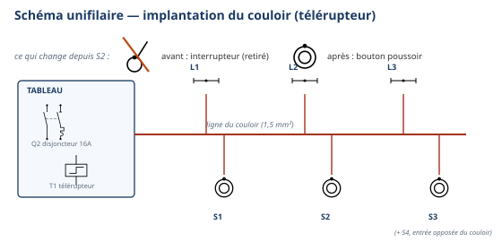

Ordre d'intervention n° OI-S4-2 : le pavillon du client est prêt pour la réception des travaux. C'est la
dernière visite avant la remise des clés. Le client exige que tout l'éclairage du couloir fonctionne du
premier coup, sans reprise le jour de la réception. Vous re-câblez seul(e) le télérupteur du couloir —
le même montage que celui appris en S3-E2 — sur le circuit protégé par le disjoncteur Q2 et le DDR
Q0 (S3-E1). Vous travaillez exactement comme au jour de l'évaluation É2 : seul(e) avec ce document,
poste minuté, silence de travail. Le professeur circule ; il lève un blocage de sécurité si nécessaire, mais il ne
fait plus le travail à votre place.
Ce qui change depuis S3 — En S3-E2, vous découvriez le télérupteur avec une
fiche-guide très aidée (banque de mots, repères partiels), puis des aides largement retirées pour la minuterie.
Aujourd'hui, toute aide disparaît : pas de banque de mots, pas de repère de départ sur le schéma, pas de
fiche-guide à trous. Vous travaillez seul(e) avec ce document, dans les conditions exactes du poste
élec d'É2 : poste minuté, silence pédagogique, contrôle hors tension réalisé avant tout appel au
professeur. La grande nouveauté du jour : vous connaissez à l'avance les critères exacts qui seront
regardés à l'évaluation — la grille de ce module est celle d'É2, dévoilée aujourd'hui, transparence
totale. É2 arrive en semaine 13 : tes objectifs de progrès post-É1 se vérifient maintenant.
Le déroulé du jour — rotation 1 puis rotation 2
Vous vivez ce module en deux rotations, dans la même séance : rotation 1, vous câblez le télérupteur
en entier, seul(e), du repérage du schéma jusqu'aux essais, puis vous vous auto-corrigez avec la grille
dévoilée. Rotation 2, vous reprenez uniquement ce que vous avez raté au premier essai — un raccord
oublié, un serrage insuffisant, une lecture de schéma erronée. Cette reprise ciblée EST la méthode du module :
ce n'est pas un recommencement complet, c'est une correction précise de ce qui doit encore progresser avant É2.
Tâches
T10 Repérer, raccorder, assembler les réseaux fluidiques, aérauliques et électriques T11 Contrôler les circuits hors fonctionnement
Savoirs
S2.2 Lecture de plan augmenté (autonomie totale de lecture) Prérequis : câblage du télérupteur (S3-E2), protections Q1/Q0 (S3-E1)
Savoir-être
Autonomie complète (travail seul, silence pédagogique) · rigueur du contrôle hors tension AVANT appel professeur · honnêteté de l'auto-correction
Compétence (1 seule)
ConfortementC3.6 Câbler, repérer, connecter les liaisons électriques et électroniques — le statut Évaluation n'apparaît pas dans ce module
Objectifs — je serai capable de…
câbler seul(e), à partir du schéma développé de S3-E2 sans aucun repère donné, le télérupteur
du couloir sur un circuit protégé par un disjoncteur (Q2) et un DDR (Q0) ;
réaliser seul(e) le contrôle hors tension complet (continuité, serrages de chaque connexion)
avant tout appel au professeur ;
après mise sous tension par le professeur, vérifier le fonctionnement depuis chaque bouton
poussoir ;
m'auto-corriger honnêtement avec la grille dévoilée à l'avance — les mêmes critères que
l'évaluation É2 ;
reprendre en rotation 2 les points que je n'ai pas réussis du premier coup, de façon ciblée ;
m'auto-positionner honnêtement, en tenant compte de mes 2 objectifs de progrès fixés à É1, si je
suis concerné(e).
Prérequis — je sais déjà…
Ce n'est pas votre première fois avec ce montage : vous avez câblé un
télérupteur en S3-E2, et vous avez câblé les protections Q1/Q0 en S3-E1. Aujourd'hui, on ne redécouvre rien : on
consolide, en conditions d'autonomie totale :
câbler un télérupteur à partir d'un schéma développé : circuit de commande (boutons poussoirs +
bobine) et circuit de puissance (contact + lampes) ;
identifier et repérer un disjoncteur (Q1 côté garage, Q2 côté éclairage couloir) et un DDR (Q0),
sensibilité 30 mA, norme NF C 15-100 ;
réaliser seul(e) une consignation et une vérification d'absence de tension (VAT), geste acquis
depuis S1, appliqué sans rappel ;
mon positionnement au poste ÉLEC de l'évaluation É1, et mes 2 objectifs de progrès, si j'en ai —
consultez votre carnet F3 de S3 avant de commencer.
Si un de ces prérequis vous échappe encore, ce
n'est pas grave : signalez-le au professeur pendant l'auto-bilan éclair de la phase 4, plutôt que de deviner
pendant le câblage.
Matériel (par poste individuel)
Platine en bois équipée d'un rail oméga (× 1 par poste)
Télérupteur unipolaire ou bipolaire, selon matériel de l'atelier, à faire valider par
le professeur (× 1)
3 boutons poussoirs
3 supports de lampe + ampoules adaptées à la tension d'alimentation, ou voyants de simulation
Bornier de phase, bornier de neutre, bornier de terre (× 1 chacun)
Vis à bois pour la fixation du matériel (consommable)
Fils électriques souples, section du poste école (à faire valider par le professeur), couleurs
normalisées : rouge ou marron (phase), bleu (neutre), vert/jaune (terre) (consommable)
Tournevis plat et tournevis cruciforme, pince à dénuder, pince coupante
Multimètre numérique + jeu de cordons de mesure (rouge + noir)
Fiche de sécurité à cocher + ce document + crayon
Matériel minuterie (approfondissement, si rotation 1 conforme) — selon disponibilité, à faire valider
Sécurité électrique — un rituel déjà acquis, appliqué en autonomie totale
Vous connaissez déjà la consignation et la vérification d'absence de tension (VAT)
depuis S1 : personne ne vous les redémontre. Aujourd'hui, un point ne change jamais : la mise sous
tension et les essais après câblage restent un geste exclusivement professeur, même en conditions
d'évaluation blanche.
Risque
Parade
Choc électrique par contact direct avec une pièce sous tension
Ne jamais toucher un fil ou une platine sans avoir vérifié l'absence de tension (VAT). Travailler toujours hors tension pour tout câblage.
Court-circuit par une bobine de télérupteur mal raccordée
Respecter strictement le schéma retrouvé : la bobine (A1/A2) ne se raccorde jamais directement en série avec les lampes.
Boutons poussoirs mal raccordés (en série au lieu d'en parallèle)
Chaque bouton poussoir se raccorde en parallèle des autres, jamais en série.
Protection Q2 ou DDR Q0 shuntée ou non raccordée en tête de circuit
Jamais ponter une protection ; le DDR Q0 se raccorde toujours en amont du disjoncteur Q2, jamais après.
Mise sous tension accidentelle pendant le câblage ou le contrôle
Disjoncteur du poste maintenu ouvert pendant tout le câblage. Seul le professeur ferme le circuit, après contrôle systématique.
La consignation — rituel NF C 18-510, appliqué sans rappel
1. Couper — ouvrir le disjoncteur du poste.
2. Vérifier l'absence de tension (VAT) — contrôler au multimètre, position voltmètre.
3. Condamner / signaler — le professeur garde la main sur la mise sous tension.
4. Travailler hors tension — je câble, je mesure la continuité, toujours disjoncteur ouvert.
Gestes interdits
Jamais toucher un fil ou une platine sans avoir vérifié l'absence de tension ;
Jamais câbler ou modifier une platine sous tension ;
Jamais mettre une platine sous tension moi-même — seul le professeur le fait, après contrôle ;
Jamais raccorder un bouton poussoir en série sur le circuit de commande — toujours en parallèle ;
Jamais shunter (ponter) le disjoncteur Q2 ou le DDR Q0, même provisoirement ;
Jamais appeler le professeur pour la mise sous tension sans avoir d'abord terminé mon propre contrôle hors
tension — c'est exactement la règle du poste élec d'É2.
Avant de commencer, complétez la fiche de sécurité à cocher ci-dessous et
faites-la viser par le professeur. Tenue et EPI exigés :
Chaussures de sécurité ; Pas de bijoux ni de montre ; Manches ajustées ; Cheveux longs attachés.
Fiche de sécurité à cocher — document CAP, F. Henninot.
🚨 En cas d'incident — couper (interrupteur général ou arrêt
d'urgence de l'atelier, localisé dès l'entrée), alerter immédiatement le professeur, ne jamais
déplacer un camarade électrisé sans certitude sur son état. La trousse de secours est localisée dès
l'entrée dans l'atelier.
PHASE 4 — VÉRIFIER LES PRÉREQUIS — auto-bilan éclair — ≈ 15 min
1. Où en sont mes 2 objectifs de progrès post-É1 ?
Reprenez votre carnet F3 de S3 : vous y avez noté vos 2 objectifs de progrès
fixés après l'évaluation É1, poste ÉLEC. Avant de commencer le câblage, répondez honnêtement :
☐ 1. Mon 1er objectif de progrès post-É1 était :
☐ 2. Ai-je progressé dessus depuis S3-E1 et S3-E2 ? ☐ Oui, nettement ☐ En partie ☐ Pas encore
☐ 3. Mon 2e objectif de progrès post-É1 était :
☐ 4. Ai-je progressé dessus ? ☐ Oui, nettement ☐ En partie ☐ Pas encore
Si vous répondez « pas encore » sur l'un des
deux, signalez-le au professeur maintenant : c'est exactement le moment de le reprendre, avant É2.
2. Quiz éclair — reconnaître les symboles
Nommez chaque symbole ci-dessous (télérupteur, disjoncteur, DDR, bouton poussoir,
lampe) : vous les avez tous déjà rencontrés en S3-E1 et S3-E2.
Symbole 1 : ______________
Symbole 2 : ______________
Symbole 3 : ______________
Symbole 4 : ______________
Symbole 5 : ______________
Question — Dans le circuit d'aujourd'hui, lequel de ces 2 appareils
(disjoncteur Q2, DDR Q0) se raccorde le plus en amont, le plus près de l'arrivée ? Pourquoi, à votre avis ?
Variante consolidation — Si votre auto-bilan (partie 1) ou votre quiz symboles montre que vous êtes
encore fragile sur C3.6, le professeur vous propose une reprise du simple allumage (S1-E1, un
interrupteur, une lampe) avant d'attaquer le télérupteur : quelques minutes suffisent pour retrouver les
bons gestes de base sans la complexité du circuit de commande.
ROTATION 1 — câblage en autonomie complète — ≈ 75 min — TRAVAIL SEUL, SILENCE
1. Repérer le schéma — sans aucune aide
Voici le schéma unifilaire du couloir, tel que vous l'avez déjà complété en S3-E2 (à
titre de rappel de l'implantation) et le schéma développé du télérupteur, sans aucun repère. Repérez
vous-même Q2, Q0, S1, S2, S3, A1, A2, L1, L2, L3 avant de commencer à câbler : ne câblez rien tant que
vous n'avez pas identifié le circuit de commande (boutons + bobine) et le circuit de puissance (contact +
lampes).

Rappel — implantation du couloir (identique à S3-E2).Télérupteur — schéma réduit, sans repères. Le schéma complet figure en annexe
pleine page : gardez-le sous les yeux pendant tout le câblage.
2. Préparer la platine et câbler
☐ 1. Vérifier que la platine est hors tension (disjoncteur du poste ouvert)
☐ 2. Positionner le DDR (Q0), le disjoncteur (Q2), le télérupteur, les 3 boutons poussoirs et les 3 points
lumineux, selon le schéma repéré vous-même
☐ 3. Fixer chaque élément à la vis, sans forcer
☐ 4. Raccorder la phase et le neutre de la source aux bornes d'entrée du DDR (Q0)
☐ 5. Raccorder les bornes de sortie du DDR à l'entrée du disjoncteur (Q2)
☐ 6. Câbler le circuit de commande : phase (après Q2) → S1, S2, S3 en parallèle → borne A1 (ou B)
de la bobine → borne A2 → neutre
☐ 7. Câbler le circuit de puissance : phase (après Q2) → contact de sortie du télérupteur → L1, L2,
L3 en parallèle → neutre
☐ 8. Vérifier que chaque connexion est bien serrée et conforme aux couleurs normalisées
3. Mon contrôle hors tension — avant tout appel au professeur
Mesure de continuité (multimètre, disjoncteur ouvert)
Valeur attendue
Valeur mesurée
Conforme ?
Continuité du circuit de commande (un bouton poussoir appuyé)
proche de 0 Ω
☐ Oui ☐ Non
Continuité du circuit de commande (aucun bouton appuyé)
résistance infinie
☐ Oui ☐ Non
☐ Serrage vérifié à la main sur chaque borne (Q0, Q2, télérupteur, S1, S2, S3, L1, L2, L3)
☐ Couleurs normalisées respectées sur tout le montage
Exactement comme au poste élec d'É2 : vous ne
faites aucun appel au professeur avant d'avoir terminé vous-même ce contrôle complet. C'est ce contrôle,
et lui seul, qui vous autorise à demander la mise sous tension.
Appel professeur — contrôle et essais
☐ Avant la mise sous tension : je vais au tableau électrique réel, je montre le DDR, je montre le
disjoncteur de mon circuit, je note la sensibilité lue : ______ mA
☐ Câblage vérifié conforme au schéma par le professeur
☐ Mise sous tension par le professeur
☐ Appui sur S1 : la lampe change d'état
☐ Appui sur S2 : la lampe change d'état
☐ Appui sur S3 : la lampe change d'état
Visa professeur : ________________ Heure : ________________
Voici la grille qui sera utilisée au poste élec d'É2, en semaine 13. Elle vous
est dévoilée aujourd'hui : c'est la transparence totale de ce module. Cochez honnêtement, avant la
correction du professeur, ce que vous avez réellement observé sur votre propre câblage.
Critère observable — poste élec (identique à É2)
0 Non évalué
1 Non acquis
2 En cours
3 Acquis
4 Maîtrisé
Repérage sur le tableau réel : je sais montrer le DDR et le disjoncteur du circuit, et lire la sensibilité du DDR (le repérage Ph/N/PE sur la platine reste un prérequis contrôlé)
Non observé.
Ne montre pas le DDR ni le disjoncteur, ou les confond, malgré aide.
Montre le DDR et le disjoncteur avec l'aide du professeur ; sensibilité non lue ou erronée.
Montre seul(e) le DDR et le disjoncteur, lit correctement la sensibilité (30 mA).
Comme « Acquis », et explique pourquoi le DDR se place en amont du disjoncteur.
Câblage conforme au schéma, couleurs respectées, serrages fermes
Non observé.
Câblage non conforme au schéma malgré aide, ou plusieurs bornes desserrées.
Conforme avec l'aide du professeur, pour le schéma ou pour les serrages.
Câblage conforme au schéma, couleurs respectées, toutes les bornes serrées sans jeu, réalisé seul(e).
Comme « Acquis », et repère seul(e) une borne douteuse avant contrôle, explique à un pair la différence entre circuit de commande et de puissance.
Contrôle hors tension fait AVANT d'appeler le professeur
Non observé.
Appelle le professeur sans avoir contrôlé, ou contrôle incomplet.
Contrôle réalisé mais incomplet (un seul point vérifié) avant l'appel.
Contrôle complet (continuité + serrages) réalisé seul(e), avant tout appel.
Comme « Acquis », et signale lui/elle-même un doute avant l'appel plutôt que d'espérer que « ça passe ».
Savoir-être — sécurité (consignation, disjoncteur ouvert pendant tout le câblage), autonomie, silence de travail, honnêteté de l'auto-correction
Non observé.
Geste dangereux (touche un fil sans VAT, tente une mise sous tension) : niveau 1 automatique ; ou sollicite l'aide à chaque étape.
Sécurité globalement respectée avec quelques rappels ; travaille seul(e) l'essentiel du temps.
Consignation et VAT appliquées sans rappel, disjoncteur ouvert en permanence ; travaille en autonomie complète, coche sa grille avant toute correction.
Comme « Acquis », et veille spontanément à la sécurité d'un pair, identifie honnêtement un point raté sans qu'on le lui demande.
Ces critères sont ceux du poste élec d'É2, sous
réserve de la rédaction finale du sujet É2 (même logique, même échelle 0-4). Statut du jour : C3.6
Confortement — cette grille ne remonte pas sur École Directe aujourd'hui, mais elle vous prépare directement à
ce qui sera noté en semaine 13.
Vous ne recommencez pas tout le câblage : vous reprenez uniquement le ou les
points identifiés en feuille 5. Le professeur circule et lève les derniers blocages, mais il ne fait plus à
votre place.
1. Ma reprise ciblée
☐ 1. Je relis le critère où j'étais le plus bas et je relis le passage correspondant du schéma
☐ 2. Je reprends exactement ce point (un raccord, un serrage, une lecture de schéma)
☐ 3. Je recontrôle hors tension le point repris, seul(e)
☐ 4. J'appelle le professeur uniquement pour valider ce point précis
Validation professeur — rotation 2
☐ Point repris identifié correctement ☐ Reprise conforme ☐ Nouvel auto-positionnement cohérent avec ce qui est observé
Visa professeur : ________________ Heure : ________________
Approfondissement — si votre rotation 1 était déjà conforme
Câblez aussi la minuterie, de mémoire, en vous appuyant sur ce que vous savez du télérupteur (même
circuit de commande, contact de sortie différent) — aide guidée du professeur uniquement en cas de blocage réel.
Une fois votre minuterie validée, devenez tuteur : accompagnez un camarade en reprise, sans câbler à sa
place.
Question de synthèse — En comparant votre rotation 1 et votre rotation 2,
qu'est-ce qui a changé dans votre façon de travailler ? Qu'est-ce que cela vous apprend pour le jour d'É2 ?
☐ 1. Remettre la platine hors tension (disjoncteur ouvert, débranchée)
☐ 2. Remettre la molette du multimètre sur OFF, débrancher et ranger les cordons sans coude serré
☐ 3. Ranger les fils, sans les plier de façon serrée ; jeter les chutes dans le bac approprié
☐ 4. Ranger l'outillage (tournevis, pinces, multimètre) à son emplacement
☐ 5. Vérifier que le poste est propre et dégagé pour le poste suivant
Jalons franchis
☐ Rotation 1 : télérupteur câblé sur Q2 + Q0, contrôle hors tension réalisé avant appel, essais professeur
concluants, auto-correction faite honnêtement
☐ Rotation 2 : point(s) faible(s) repris et validés — ou minuterie câblée de mémoire + tutorat
(approfondissement)
Visa professeur (rotation 1) : ________________ Visa professeur (rotation 2) : ________________
Grille d'évaluation — bilan final du jour
Échelle FrigorX : 0 Non évalué · 1 Non acquis · 2 En cours
d'acquisition · 3 Acquis · 4 Parfaitement maîtrisé. Statut du jour : C3.6 Confortement — seule compétence
évaluée, aucun statut Évaluation ici.
Compétence / savoir-être
Ancrage
0 Non évalué
1 Non acquis
2 En cours
3 Acquis
4 Maîtrisé
C3.6 Câbler, repérer, connecter les liaisons électriques et électroniques
sur T10 · T11 · S2.2
Compétence non observée ce jour.
Câblage non conforme malgré aide en rotation 1 ET en rotation 2, ou contrôle hors tension non réalisé avant appel.
Câble avec l'aide du professeur pour au moins un des deux circuits, ou nécessite une reprise complète en rotation 2.
Câble seul(e) le télérupteur sur Q2 + Q0, conforme au schéma repéré sans aide ; contrôle hors tension complet réalisé avant appel ; reprise ciblée réussie en rotation 2 si nécessaire.
Comme « Acquis » dès la rotation 1, sans reprise nécessaire ; ou câble aussi la minuterie de mémoire et tutore un pair.
Savoir-être — autonomie, sécurité, honnêteté
observation continue
Non observé ce jour.
Geste dangereux (touche un fil sans VAT, tentative de mise sous tension) ou grille auto-corrigée non honnête : niveau 1 automatique.
Sécurité globalement respectée, quelques sollicitations d'aide au-delà du cadre.
Travail en autonomie complète, silence respecté, auto-correction honnête, sécurité sans rappel.
Comme « Acquis », et identifie et corrige seul(e) un point faible avant d'être sollicité(e).
Mon auto-positionnement final :
C3.6 : 01234
Savoir-être : 01234
Si vous étiez positionné(e) 1 ou 2 sur C3.6 à É1 :
ce module était votre dernière consolidation avant l'évaluation — avez-vous progressé ?
Documents à remettre
Ce document complété (auto-bilan, quiz symboles, câblage, contrôles, auto-correction, reprise)
Fiche de sécurité à cocher visée par le professeur
Bon de commande hebdomadaire (fils, boutons poussoirs, télérupteurs de rechange)
D'après : Document élève - TP.html
de S3-E2 (télérupteur — schémas, circuit de commande/circuit de puissance, F. Henninot) et de S3-E1 (protections
Q1/Q0, DDR 30 mA, F. Henninot) — mêmes schémas repris, corrigés (repère Q2 pour le disjoncteur du circuit
éclairage couloir, distinct de Q1 disjoncteur garage) ; valeurs NF C 15-100 (1,5 mm², 8 points d'éclairage
maximum, disjoncteur 16 A, DDR 30 mA) sourcées dans le-telerupteur.pdf et cours-minuterie.pdf
(02_CAP-IFCA/S4-Electricite et Froid-Frigorifique) ; Charte pédagogique FrigorX (§6 préparation de chantier, §7
sécurité) ; référentiel CAP IFCA (codes C3.6, T10, T11, S2.2) ; grille É1 poste ÉLEC (positionnement réel, à
croiser en phase 4 — aucun résultat fictif dans ce document). Symboles : bibliothèque de symboles inerWeb
(télérupteur, disjoncteur_1p_n, differentiel_2p, bp_archi, lampe_fluorescente). Continuité directe de la
progression S1→S4 pour cette même classe.
Télérupteur — schéma développé de travail complet (sans repères)
⚠ À imprimer en A3 PAYSAGE (une feuille par
poste) : c'est le document à garder sous les yeux pendant tout le câblage. Aucun repère n'est donné : vous les
retrouvez vous-même, exactement comme au poste élec d'É2.